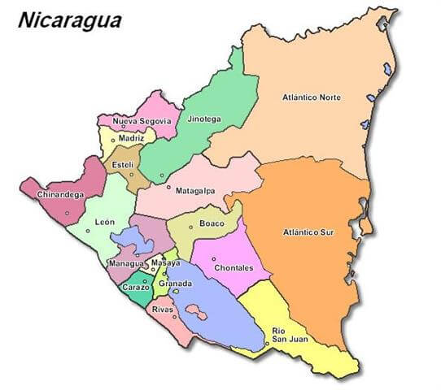

El territorio de Nicaragua tiene una superficie aproximada de 130 370 km2, constituyéndose con ello como el país más extenso de Centroamérica. Nicaragua cuenta con una población de 6 595 674 habitantes (2020). Limita al norte con Honduras, al sur con Costa Rica, al oeste con el océano Pacífico y al este con el mar Caribe. En cuanto a límites marítimos, en el océano Pacífico colinda con El Salvador, Honduras y Costa Rica; mientras que en el mar Caribe colinda con Honduras, Colombia y Costa Rica.
-

Departamentos de Nicaragua
Organización administrativa: 15 departamentos y 2 regiones autónomas:
Regiones Autonómas:
1. Atlántico Norte
2. Atlántico Sur
Departamentos:
1. Boaco
2. Carazo
3. Chinandega
4. Chontales
5. Esteli
6. Granada
7. Jinotega
8. León
9. Madriz
10. Managua
11. Masaya
12. Matagalpa
13. Nueva Segovia
14. Río San Juan
15. Rivas
Historia de Nicaragua
Nicaragua fue poblada a la vez por los Mayas y los Nahuas, quienes ocuparon la depresión central, y por los Miskitos (o Mosquitos), los Ramas y los Sumus, quienes se instalaron sobre la costa del mar Caribe.
Los primeros colonos españoles conducidos por Gil Gonzáles Dávila penetraron en Nicaragua hacia el año 1520 y el país fue agregado a la capitanería general de Guatemala. La dominación española permaneció sin embargo limitada en la costa pacífica.
La independencia fue proclamada en 1821 y, en 1823, Nicaragua devino miembro de las Provincias Unidas de América Central, de las cuales se separó en 1838 para ser una república independiente. Ideal para la construcción de un canal que uniera el océano Pacífico y el Atlántico, la posición de Nicaragua encendió las ambiciones de los británicos, quienes establecieron un protectorado sobre la costa de los Mosquitos, entre 1841 y 1848.
Durante las siete décadas que siguieron a la independencia, los gobiernos liberales y conservadores alternaron en el poder no sin rivalidades. En 1855, William Walker, un aventurero norteamericano a quienes los liberales habían pedido apoyo, invadió el país a la cabeza de un ejército de mercenarios y se autoproclamó presidente. Fue derrocado en 1857.
Los liberales retomaron el poder en 1893 pero, en 1909, un golpe de estado sostenido por los Estados Unidos dio el poder a los conservadores. A partir de 1912, Nicaragua cayó bajo la dependencia de Estados Unidos quienes instalaron sus tropas. Su retirada en 1933 dejó el país a merced del general Anastasio Somoza García, apoyado por la guardia nacional.
En 1934, Augusto César Sandino, jefe de los guerrilleros que habían combatido la presencia norteamericana, fue asesinado mientras participaba de negociaciones por la paz. Somoza se autoproclamó presidente en 1936 e impuso al país su dictadura hasta su asesinato en 1956. Sus hijos le sucedieron, Luis hasta 1963 y Anastasio de 1967 à 1969, año en que fue derrocado. El desvío de los fondos de sostén enviados después del terremoto que destruyó Managua y provocó la muerte de al menos cinco mil personas en 1972 alimentó un fuerte sentimiento de hostilidad respecto al clan Somoza y contribuyó al ascenso del Frente Sandinista de Liberación Nacional, nombrado así en homenaje a César Sandino.
Después del asesinato en 1978 del director del principal diario de oposición, Pedro Joaquín Chamorro, las revueltas estallaron. Los sandinistas tomaron por asalto el Palacio Nacional de Managua y siguió una guerra civil. En julio de 1979, después de varios meses de combates que habrían provocado la muerte de cincuenta mil personas, Anastasio Somoza se vio obligado a dejar el país.
Los sandinistas pusieron en marcha un programa económico de inspiración socialista comprendiendo en particular nacionalizaciones y reformas agrarias. La Constitución de 1974 fue suspendida. Inquietos por ver a los sandinistas ayudar a los rebeldes marxistas de El Salvador, el gobierno norteamericano interrumpió su ayuda económica a Nicaragua en 1981 y financió la oposición de los contras, después impuso al país un embargo comercial, penalizando severamente la economía.
Gracias a negociaciones, entabladas bajo el arbitraje del presidente costarricense Óscar Arias Sánchez en 1987 entre sandinistes y contras, el gobierno sandinista, dirigido desde 1985 por Daniel Ortega, consintió en organizar elecciones libres en 1990 en contrapartida al desarme de los contras.
Ortega fue vencido por Violeta Barrios de Chamorro, viuda del director del diario asesinado en 1978, candidata apoyada por una coalición conservadora, la Unión Nacional de la Oposición (UNO), pero también por los Estados Unidos quienes se comprometieron a poner término a su embargo y aportar su ayuda al país.
Sin embargo, a pesar de la elección democrática de Violeta Chamorro, las rivalidades entre bandas armadas constituidas por antiguos sandinistas y antiguos contras contribuyeron a mantener un clima de inseguridad. Además, la situación económica permanecía muy precaria, y el gobierno debió hacer frente constantemente a movimientos de huelga.
En octubre de 1996, el representante de la derecha liberal, Arnoldo Alemán, fue elegido presidente de la república contra Daniel Ortega. Según los términos de la Constitución, la presidente saliente, Violeta Chamorro, no podía ambicionar un nuevo mandato.
Símbolos Patrios

Bandera
Nicaragua es la única República de Centro América que conserva la Bandera y el Escudo de la federación Centroamericana. Esta, consta de tres fajas iguales y en sentido horizontal: blanca la del centro y azules la de los extremos. En el centro de la faja blanca aparece el Escudo de la Nación.El lunes de cada semana, antes de comenzar las clases, los cinco alumnos que por su aplicación y conducta se hayan distinguido durante la semana anterior, introducirán el Pabellón Nacional en el sitio de honor de la escuela o colegio, a juicio del director. En este solemne acto, todos los escolares, puestos de pie, cantan el Himno Nacional.
Escudo
El Escudo de Armas de la República de Nicaragua está conformado por un triángulo equilátero, de cuya base surgen cinco volcanes bañados por las aguas de dos mares.
En su parte superior, un arco iris. Posteriormente, el gorro frigio de la libertad que esparce luces. A su alrededor se encuentra la leyenda REPÚBLICA de NICARAGUA AMÉRICA CENTRAL.
El Escudo de Nicaragua tiene la forma de un triángulo equilátero, significando IGUALDAD. También indica la rectitud de su Patria y de sus instituciones, a la que deben ajustar su conducta todos los ciudadanos.
El arco iris significa PAZ, que debe reinar en nuestro pueblo y en todas las naciones hermanas. El gorro frigio o gorro es el símbolo de la LIBERTAD, los cinco volcanes expresan la UNIÓN y la FRATERNIDAD de los países de Centroamérica.
Ave Nacional (Guardabarranco)
Decretado en La Gaceta, Diario Oficial No. 194, del 27 de agosto de 1971, que es el Guardabarranco, el ave nacional de Nicaragua.La razón por la cual se escogió esta ave fue porque ella representa nuestra identidad nacional, cultura y tradición que es muy rica y variada, a través de sus distintos colores y por supuesto ella representa a nuestro país con mucha elegancia.
Árbol Nacional (Madroño)
El madroño es el Árbol Nacional de Nicaragua desde 1971. En La Gaceta, Diario Oficial de la República de Nicaragua, número 194, aparece reproducido el Decreto Legislativo No. 1891 por el cual se declara al madroño Árbol Nacional de Nicaragua.
A nivel nacional y en cada rincón del país podemos encontrar este árbol quien con sus colores vistosos adorna cualquier lugar donde se encuentre. Actualmente los podemos encontrar en muchas alcaldías del país, sembrado en parques, bulevares, hogares y escuelas.
Flor Nacional (Sacuanjoche)
La Flor nacional de Nicaragua es el Sacuanjoche, y tiene un símbolo de inmortalidad para varias culturas; porque se usa en uniones matrimoniales representando la fuerza y el amor espirítual.
Himno Nacional de Nicaragua
LETRA
¡Salve a ti, Nicaragua! En tu suelo,
ya no ruge la voz del cañón, ni se tiñe con sangre de hermanos tu glorioso pendón bicolor.
Brille hermosa la paz en tu cielo, nada empañe tu gloria inmortal, ¡que el trabajo es tu digno laurel y el honor es tu enseña triunfal!
¿Quieres visitar Nicaragua? Te dejamos una guía de turismo en la que puedes consultar la amplia gama de lugares que puedes conocer.
Has clic aquí.